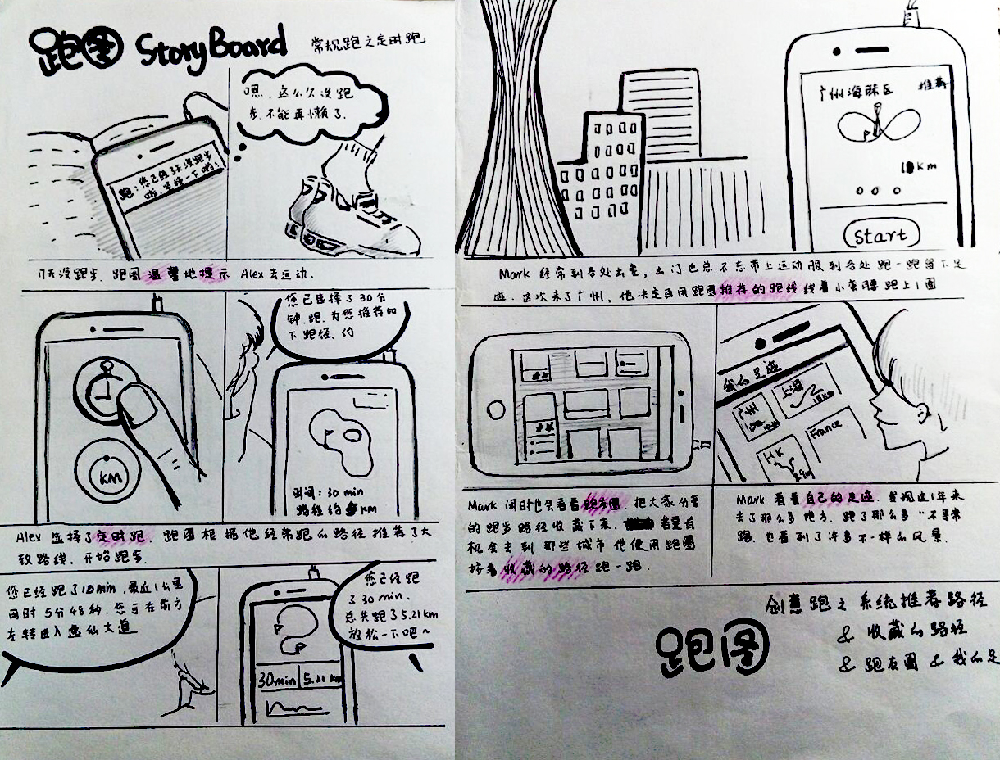
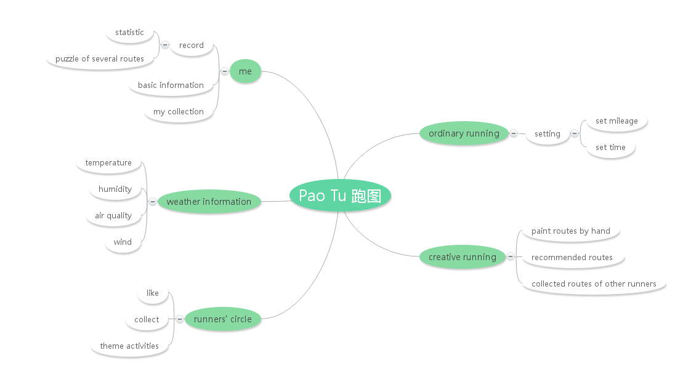
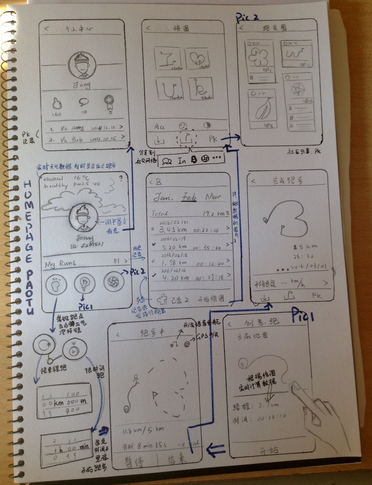
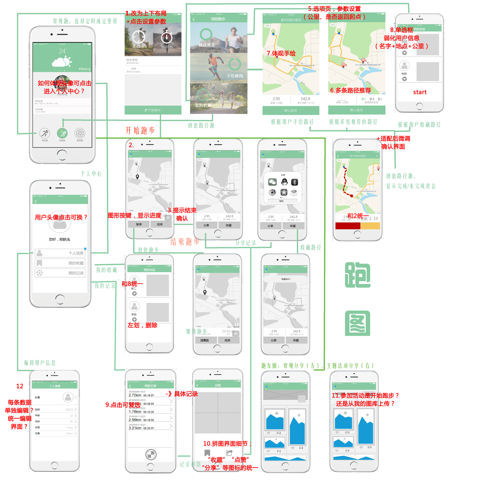
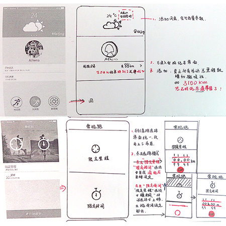
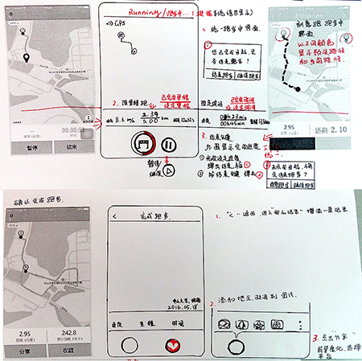

00 Where the idea came from?

A picture with characters-- “will you marry me”-- was popular on the Internet and spread quickly on the social network. Characters on the picture were "wrote" by running and recording the routes.
Nowadays, people of different age levels are willing to try new things and follow the latest trend. In addition, more people begin to exersise by running, however, it's quite hard to insist. We tried to make the ordinary running process much more attractive and inspiring.
Pao Tu was the project for Mobile Interaction Design course(02.2016-06.2016). We analyzed problems, sketched, studied users, analyzed tasks, made Axure prototype, evaluated and improved the prototype.

01 Problem discovery and concept design
- In this stage, we discovered problems through brainstorm and set our topic - "PaoTu".
- Market and competitive analysis of current sports and fitness Apps, like Nike+, Joyrun, Keep, were did.

Target Users:
1. Running enthusiasts
They need to record and analyze routes, speed and other specific datas to better control their performance.
2. Potential Runners
They are willing to run but lack the motivation to insist.
3. Trend followers
They are the trend creators and followers, and enjoy sharing interesting things on social networks.
- Story Board:
- Information architecture
- Wireframe Sketch
Then I drew the wireframe sketch, which was used as the model for further design-- design of detailed contents, interfaces, operational flows and so on.
02 Middle stage: User research and task analysis
- Based on our preliminary design, we did a user interview. We listed 12 questions and interviewed 6 people. Among them, 3 people had the running habit and 4 had used related Apps.

- Analysis our target users, mental model diagram was made, according to three main needs-- managing regular running activities and exercising, making running interesting and creative, and socializing.
03 Late stage: Visual design and prototyping
Low-fidelity Prototype & Evaluation with Walkthrough Method
We made improvements on the design of interfaces, content, interaction and other details.
Details
 High-fidelity Prototype & Visual Design
We made a high-fidelity prototype with Axure, in the meanwhile made several evaluations to optimize the design.


Our team: Wang Yue, Wang Peili, Li Juanhui, Wei Zehua, Zheng Xujiang